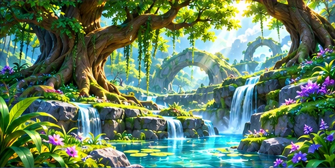
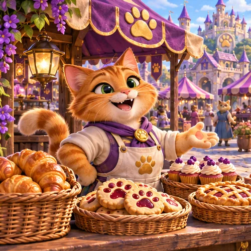
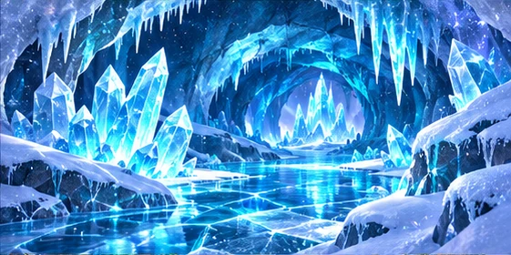

🌻 Flower Trail
Sunleaf Meadow
Help Luna find the tiny wonders hidden among sunlit leaves.
Your clue will appear here.
Ready to explore
Whisker & Luna's Pawtopia · Free pet adventures
Adventure through four storybook regions with your adopted cat. Follow clues, make discoveries, collect keepsake stamps and unlock free accessories for your companion.
Choose or adopt your catEach trail offers a new clue every day. Guess again if you miss one. Solve a trail once per day to earn 2 free in-game Paw Coins, 1 friendship point, and its first keepsake stamp. No paid items, no penalty for missing a day.

Help Luna find the tiny wonders hidden among sunlit leaves.
Your clue will appear here.
Ready to explore

Whisker searches for shining secrets deep inside a friendly cave.
Your clue will appear here.
Ready to explore

Follow friendly workshop clues in the garden outside Town Square.
Your clue will appear here.
Ready to explore

Discover gentle winter clues with your brave feline scout.
Your clue will appear here.
Ready to explore
Each adopted cat keeps its own discoveries. Revisit a trail with another cat on a future day to unlock a souvenir for them too.
Your progress is saved in this browser with your existing Pawtopia companions. Clearing browser storage removes local progress.